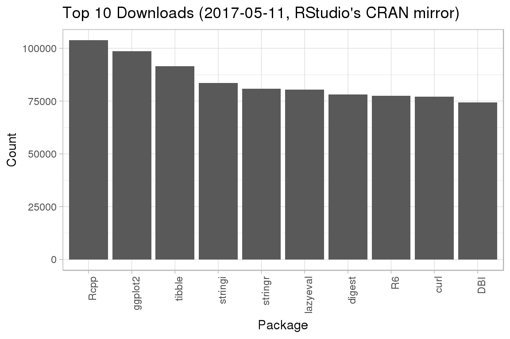

Unit testing is a very important aspect of programming and modulr is well-suited for this purpose.
Let us consider the following module, exposing a function which computes the first terms of the infinite sequence of powers of \(2\): \(2^0=1\), \(2^1=2\), \(2^2=4\), \(2^3=8\), etc.
"powers_of_2" %provides% {
function(terms = 10L) {
2L ^ (seq_len(terms) - 1L)
}
}
#> [2018-12-02T16:14:53 UTC] Defining 'powers_of_2' ... OKFor all \(n\geq1\), let \((x_1, ..., x_n)\) the sequence consisting of the first \(n\) powers of \(2\). Let us suppose that we want to perform elementary tests on some of these sequences: a. \(x_1=1\), b. \(x_n=2^{n-1}\), and c. \(x_{i+1} = 2x_i\) for all \(1\leq i\leq n-1\).
Let us then define powers_of_2/test, a dedicated module for testing powers_of_2 using Hadley Wickham’s testthat package.
"powers_of_2/test" %requires% list(
powers_of_2 = "powers_of_2"
) %provides% {
library(testthat)
test_that("First term is 1", {
for (terms in sample(1L:50L, 3L, replace = FALSE)) {
expect_equal(
powers_of_2(terms)[1L],
1L
)
}
})
test_that("Last term is as expected", {
for (terms in sample(1L:50L, 3L, replace = FALSE)) {
expect_equal(
tail(powers_of_2(terms), 1L),
2L ^ (terms - 1L)
)
}
})
test_that("Any two consecutive terms are as expected", {
for (terms in sample(2L:50L, 3L, replace = FALSE)) {
series <- powers_of_2(terms)
for (index in sample(1L:(terms - 1L), min(10L, (terms - 1L)),
replace = FALSE)) {
expect_equal(series[index] * 2, series[index + 1L])
}
}
})
}
#> [2018-12-02T16:14:53 UTC] Defining 'powers_of_2/test' ... OKIn order to run the tests, it is sufficient to evaluate this module.
make("powers_of_2/test")
#> [2018-12-02T16:14:53 UTC] Making 'powers_of_2/test' ...
#> [2018-12-02T16:14:53 UTC] * Visiting and defining dependencies ...
#> [2018-12-02T16:14:54 UTC] * Constructing dependency graph ... OK
#> [2018-12-02T16:14:54 UTC] * Evaluating #1/1 (layer #1/1): 'powers_of_2' ...
#>
#> Attaching package: 'testthat'
#> The following objects are masked from 'package:devtools':
#>
#> setup, test_file
#> [2018-12-02T16:14:54 UTC] DONE ('powers_of_2/test' in 0.078 secs)It is also possible to run all available tests.
make_tests()
#> [2018-12-02T16:14:54 UTC] Making 'powers_of_2/test' ...
#> [2018-12-02T16:14:54 UTC] * Visiting and defining dependencies ...
#> [2018-12-02T16:14:54 UTC] * Constructing dependency graph ... OK
#> [2018-12-02T16:14:54 UTC] DONE ('powers_of_2/test' in 0.026 secs)
#> PASSED.To illustrate the situation where some test fails, let us consider a faulty version of powers_of_2.
"powers_of_2" %provides% {
function(terms = 10L) {
sequence <- 2L ^ (seq_len(terms) - 1L)
# This is a faulty version.
sequence[1L] <- 0L
}
}
#> [2018-12-02T16:14:54 UTC] Re-defining 'powers_of_2' ... OKmake_tests()
#> [2018-12-02T16:14:54 UTC] Making 'powers_of_2/test' ...
#> [2018-12-02T16:14:54 UTC] * Visiting and defining dependencies ...
#> [2018-12-02T16:14:54 UTC] * Constructing dependency graph ... OK
#> [2018-12-02T16:14:54 UTC] * Evaluating #1/1 (layer #1/1): 'powers_of_2' ...
#> Error: Test failed: 'First term is 1'
#> * powers_of_2(terms)[1L] not equal to 1.
#> 1/1 mismatches
#> [1] 0 - 1 == -1
#> * powers_of_2(terms)[1L] not equal to 1.
#> 1/1 mismatches
#> [1] 0 - 1 == -1
#> * powers_of_2(terms)[1L] not equal to 1.
#> 1/1 mismatches
#> [1] 0 - 1 == -1
#> Error: FAILED.Let us consider the following module, which relies on RStudio’s cranlogs package to request the list of top downloaded packages from their CRAN mirror.
"get_top_downloads" %provides% {
library(cranlogs)
function(when = "last-week", count = 100L) {
cran_top_downloads(when = when, count = count)
}
}The following module uses Hadley Wickham’s ggplot2 package to plot the list of top downloaded packages.
"plot_top_downloads" %requires% list(
get_top_downloads = "get_top_downloads"
) %provides% {
library(ggplot2)
function(when = "last-week", count = 10L) {
top_downloads <- get_top_downloads(when = when, count = count)
ggplot(data = top_downloads,
aes(x = top_downloads$package, y = top_downloads$count)) +
theme_light() +
theme(axis.text.x = element_text(angle = 90.0, hjust = 1.0)) +
geom_bar(stat = "identity") +
scale_x_discrete(limits = top_downloads$package) +
labs(
title = sprintf(
"Top %d Downloads (%s, RStudio's CRAN mirror)",
count,
format(unique(top_downloads$to), format = "%Y-%m-%d")),
x = "Package", y = "Count")
}
}
#> [2018-12-02T16:14:54 UTC] Defining 'plot_top_downloads' ... OK
plot_top_downloads %<=% "plot_top_downloads"
#> [2018-12-02T16:14:54 UTC] Making 'plot_top_downloads' ...
#> [2018-12-02T16:14:54 UTC] * Visiting and defining dependencies ...
#> [2018-12-02T16:14:54 UTC] * Constructing dependency graph ... OK
#> [2018-12-02T16:14:54 UTC] * Evaluating #1/1 (layer #1/1): 'get_top_downloads' ...
#> [2018-12-02T16:14:54 UTC] DONE ('plot_top_downloads' in 0.22 secs)
plot_top_downloads()
Testing this module directly would require to be connected on the internet and would stress the RStudio’s remote API, which is very bad practice. In order to avoid such prohibited behaviour, it is recommended to define new modules that mock the original functionalities.
"get_top_downloads/mock" %provides% {
library(tibble)
function(...) {
tribble(
~rank, ~package, ~count, ~from, ~to,
1L, "Rcpp", 105000L, as.Date("2017-05-05"), as.Date("2017-05-11"),
2L, "ggplot2", 100000L, as.Date("2017-05-05"), as.Date("2017-05-11"),
3L, "tibble", 90000L, as.Date("2017-05-05"), as.Date("2017-05-11")
)
}
}
#> [2018-12-02T16:14:54 UTC] Defining 'get_top_downloads/mock' ... OK"plot_top_downloads/mock" %requires% list(
get_top_downloads = "get_top_downloads/mock"
) %provides% get_provider("plot_top_downloads")
#> [2018-12-02T16:14:54 UTC] Defining 'plot_top_downloads/mock' ... OKNotice the use of get_provider("plot_top_downloads") in the second definition: plot_top_downloads/mock requires get_top_downloads/mock, a mock version of get_top_downloads, but provides the same features as plot_top_downloads; change the definition of plot_top_downloads and it will change the definition of plot_top_downloads/mock at the same time.
Along the lines of the first example, you can then define a testing module.
"plot_top_downloads/test" %requires% list(
plot_top_downloads = "plot_top_downloads/mock"
) %provides% {
library(testthat)
plot <- plot_top_downloads()
test_that("X-Axis is labelled 'Package'", {
expect_identical(plot$labels$x, "Package")
})
test_that("Y-Axis is labelled 'Count'", {
expect_identical(plot$labels$y, "Count")
})
test_that("Plot layers match expectations", {
expect_is(plot$layers[[1L]], "ggproto")
expect_is(plot$layers[[1L]]$geom, "GeomBar")
expect_is(plot$layers[[1L]]$stat, "StatIdentity")
})
}
#> [2018-12-02T16:14:54 UTC] Defining 'plot_top_downloads/test' ... OKmake_tests()
#> [2018-12-02T16:14:54 UTC] Making 'plot_top_downloads/test' ...
#> [2018-12-02T16:14:54 UTC] * Visiting and defining dependencies ...
#> [2018-12-02T16:14:54 UTC] * Constructing dependency graph ... OK
#> [2018-12-02T16:14:54 UTC] * Sorting 2 dependencies with 2 relations ... on 2 layers, OK
#> [2018-12-02T16:14:54 UTC] * Evaluating new and outdated dependencies ...
#> [2018-12-02T16:14:54 UTC] ** Evaluating #1/2 (layer #1/2): 'get_top_downloads/mock' ...
#> [2018-12-02T16:14:54 UTC] ** Evaluating #2/2 (layer #2/2): 'plot_top_downloads/mock' ...
#> [2018-12-02T16:14:54 UTC] DONE ('plot_top_downloads/test' in 0.08 secs)
#> PASSED. You're #1.As a last example, it is considered a good practice to provide all modulr gears with appropriate tests, as illustrated by https://gist.github.com/aclemen1/3fcc508cb40ddac6c1e3.
"modulr/vault" %imports% "3fcc508cb40ddac6c1e3"
#> [2018-12-02T16:14:55 UTC] Importing 'modulr/vault' from gist ID '3fcc508cb40ddac6c1e3' ...
#> [2018-12-02T16:14:55 UTC] * Found 1 file(s) with R flavour (see https://gist.github.com/3fcc508cb40ddac6c1e3).
#> [2018-12-02T16:14:55 UTC] * Installing gear at '/tmp/Rtmp5msR7l/gears/modulr/vault/d4f0872e6d7a00c9'.
#> [2018-12-02T16:14:55 UTC] DONE ('modulr/vault')
#> [2018-12-02T16:14:55 UTC] Defining 'modulr/vault/example_SECRET_' ... OK
#> [2018-12-02T16:14:55 UTC] Defining 'modulr/vault/example' ... OK
#> [2018-12-02T16:14:55 UTC] Defining 'modulr/vault#0.1.0' ... OK
#> [2018-12-02T16:14:55 UTC] Defining 'modulr/vault#0.1.0/mock' ... OK
#> [2018-12-02T16:14:55 UTC] Defining 'modulr/vault#0.1.0/test' ... OK
#> [2018-12-02T16:14:55 UTC] Digest of 'modulr/vault#0.1.0' is '390032bb2476c24e'.
make_tests()
#> [2018-12-02T16:14:55 UTC] Making 'modulr/vault#0.1.0/test' ...
#> [2018-12-02T16:14:55 UTC] * Visiting and defining dependencies ...
#> [2018-12-02T16:14:55 UTC] * Constructing dependency graph ... OK
#> [2018-12-02T16:14:55 UTC] * Evaluating #1/1 (layer #1/1): 'modulr/vault#0.1.0/mock' ...
#> Loading required package: base64enc
#>
#> Attaching package: 'assertthat'
#> The following object is masked from 'package:tibble':
#>
#> has_name
#> [2018-12-02T16:15:04 UTC] DONE ('modulr/vault#0.1.0/test' in 9.2 secs)
#> PASSED.